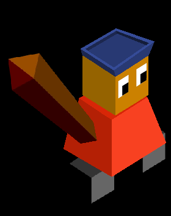
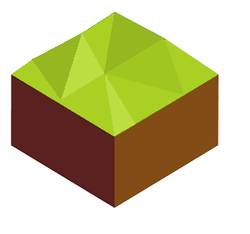

Armâda
The Armâda are the masters of the Sea’s of the square and there is no water too hard for them to conquer.
The Armâda start with the ‘Sailing’ tech.
Their spawn rates:
Water: 50%
Land: 10%
Land, fruit: 5%
Land, crop: 5%
Forest: 5%
Forest, game: 10%
Mountain: 5%
Mountain, ore: 5%
They always have at least 2 water tile in their starting border.
They start with a boat in one of the water tiles next to their capital.
Animal: Lynx
Parts forming the cities names
Ar O Se Ña U Jâ Ing Rî Ta I Sa Jo LL No Y D
LL is pronouced Y (/j/ not /i/)
Images

The Warrior

Their Land Tile